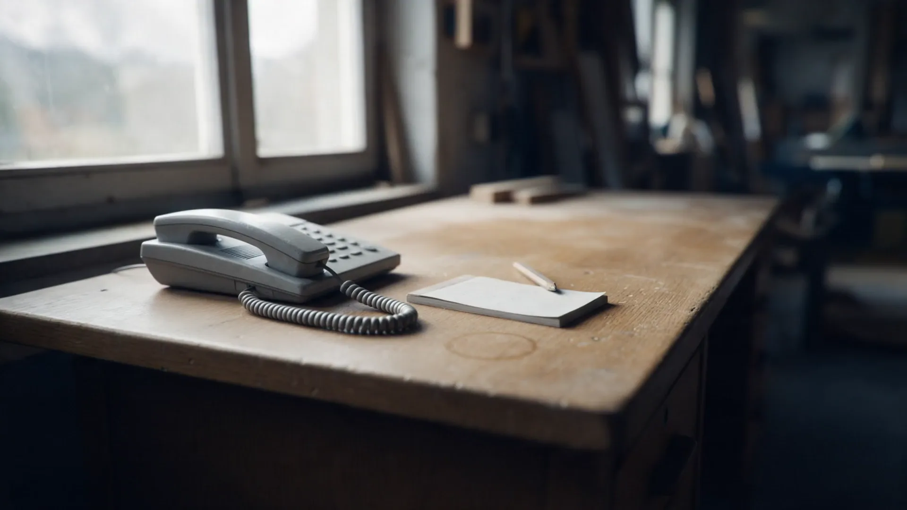
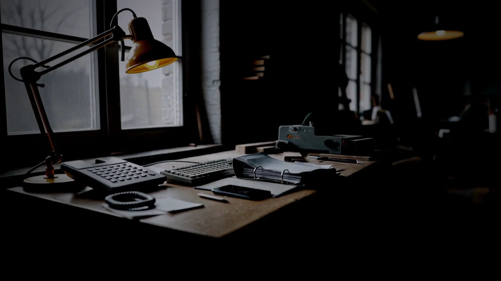
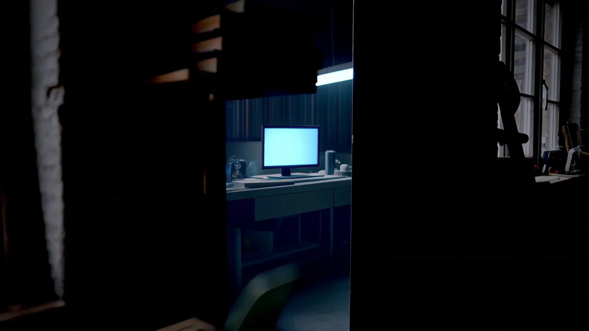
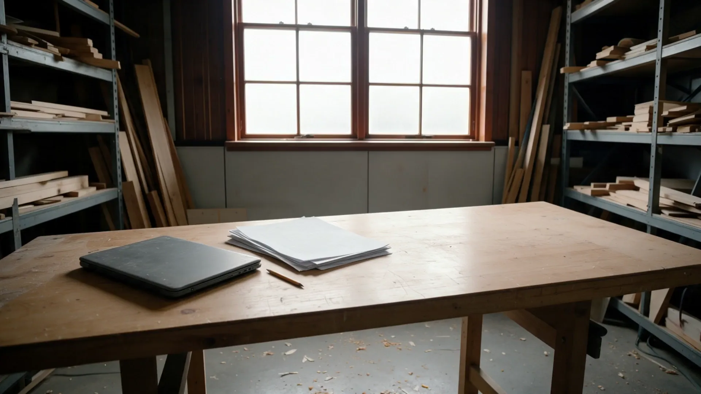
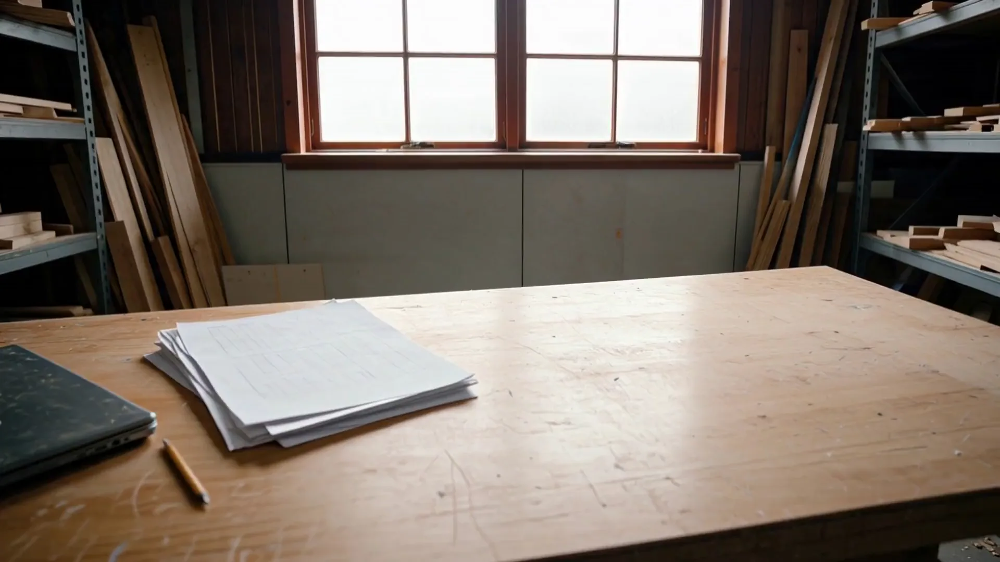
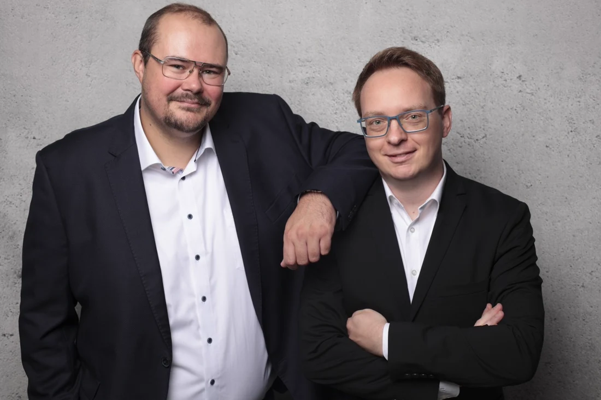

Du klickst deine Software, bevor die erste Zeile Code existiert. Dein Wissen und dein Plan bleiben bei dir.
Zettel, Tabelle, Nachrichtenverlauf, und eine gekaufte Software, die die Hälfte kann. Jeder Übergang kostet Zeit und produziert Fehler, die erst in der Rechnung auffallen.
Freitag, 19 Uhr
Du überträgst Zahlen aus einem System in ein anderes, weil die beiden nicht miteinander reden. Draußen wartet deine Familie.
Irgendwer im Betrieb hat sich mit KI etwas gebaut, das tatsächlich funktioniert und längst benutzt wird. Es liegt online, es enthält Kundendaten, und niemand hat je geprüft, wer darauf zugreifen kann. Abschalten geht nicht mehr.
Zwischen deinem Wissen und der ersten Zeile Code fehlt ein Schritt.
Die Planphase
Du erzählst in deinen Worten, was dein Betrieb tut. Sprachnachricht auf dem Weg zur Baustelle, Foto, Skizze. Daraus entsteht ein Entwurf, den du bedienen kannst, bevor jemand baut.
Probier ihn aus. Der Entwurf ist echt und reagiert wirklich.
Das Freigabe-Gate
Die Planphase hat einen festen Preis, einen festen Umfang und ein festes Ende. Willst du danach nicht weitermachen, hörst du auf, ohne Begründung und ohne Folgekosten. Der Plan gehört dir und ist mit jedem umsetzbar.

Marcus Püschel und Christoph OrthsOder ruf direkt an: +49 163 727 1007. Wir hören erst zu, bevor wir bauen.
Bildwelt KI-generiert